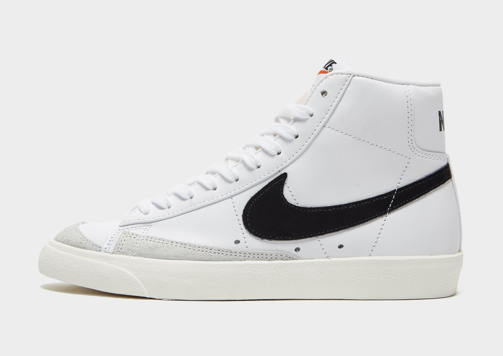

Описание
Дизайн модели Nike Blazer Mid '77 Vintage, созданный еще в 1970-х годах, продолжает оставаться актуальным и с течением времени приобретает дополнительную привлекательность. Верх кед выполнен из мягкой кожи и дополнен вставками из натуральной замши. Необработанные края язычка и использование открытого пеноматериала придают обуви винтажный вид. Перфорация вдоль подошвы способствует хорошей циркуляции воздуха, а метод термической обработки обеспечивает мягкость и комфорт. Резиновая подошва с зигзагообразным протектором обеспечивает превосходное сцепление с поверхностью и узнаваемый отпечаток.